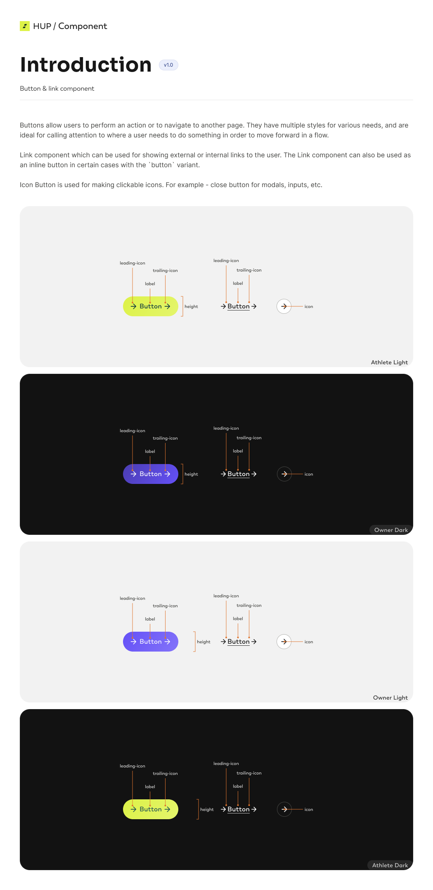
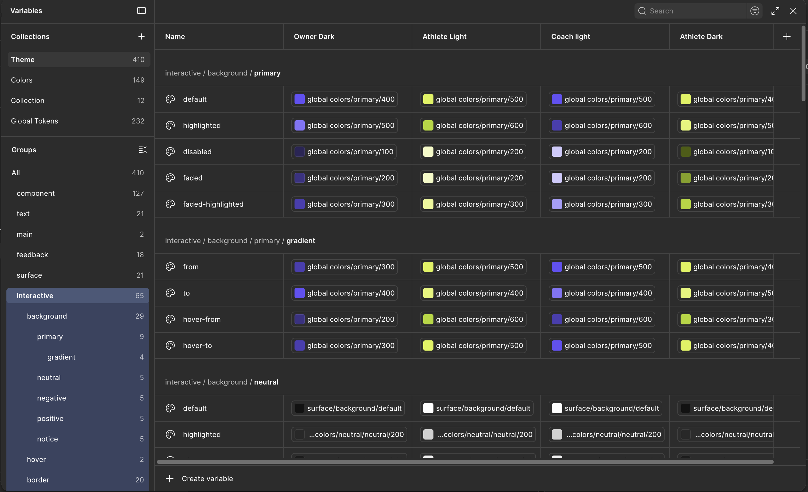
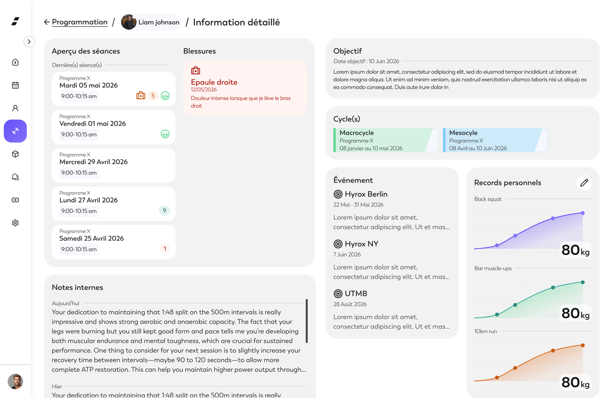
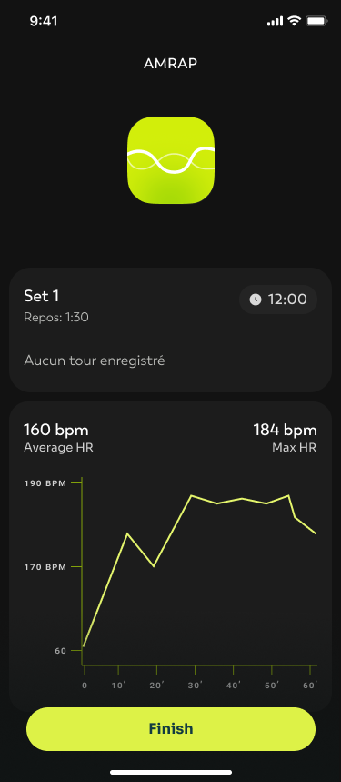
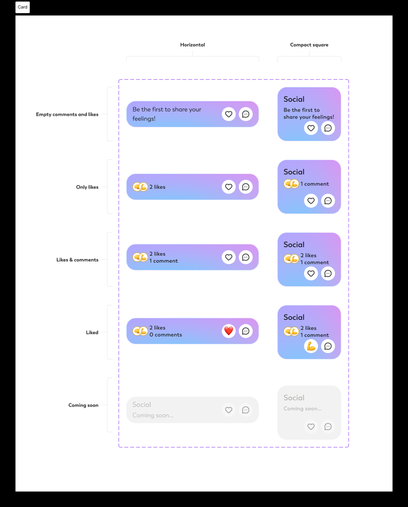
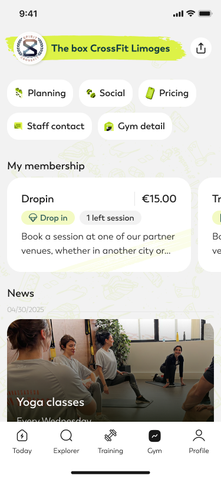
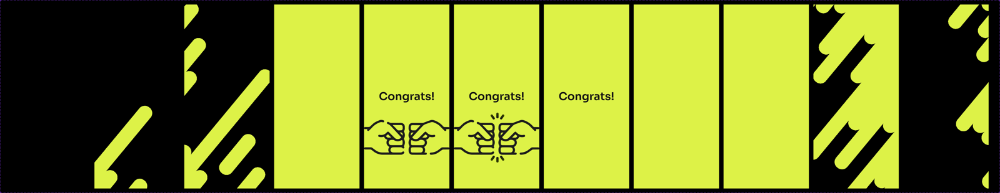
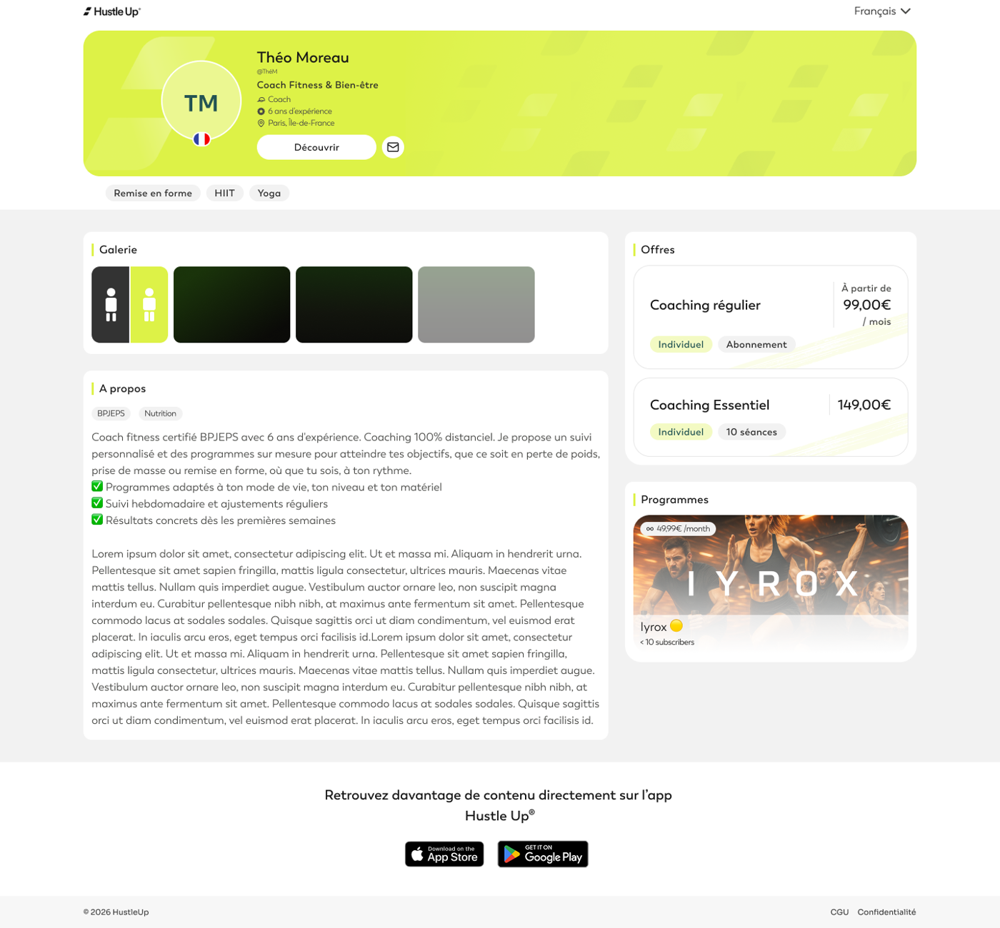
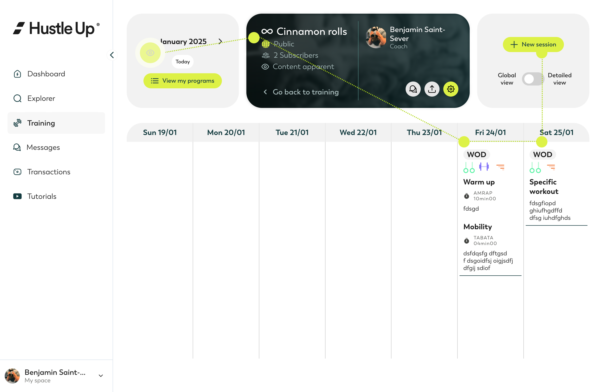
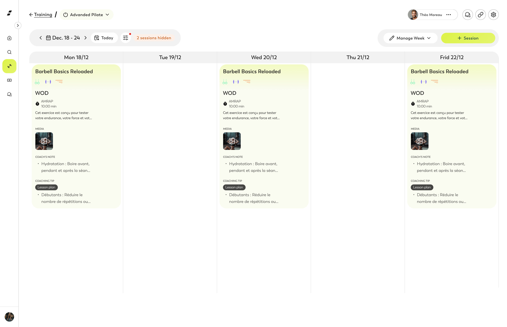

Portfolio, études de cas
Je conçois des produits B2B denses en données avec un workflow de design assisté par IA, et je raconte mes projets par les décisions que j'ai tranchées.
Product / UX designer, 7 ans d'expérience. Quatre forces que je mets au service du produit : un workflow de conception assisté par IA ancré sur le design system, des interfaces denses en données et des dashboards opérateurs, la conception de design systems de bout en bout, et une collaboration étroite avec les développeurs jusqu'à l'intégration. Chaque étude suit la même structure : le problème, ce que j'ai fait, l'arbitrage clé, le résultat.
01, Hustle Up
Concevoir avec l'IA
Greffer un workflow de génération de maquettes sur le design system, sans lâcher la main

Une fois le design system en place, restait la question de la production. Deux façons de produire des maquettes posaient chacune un problème. Le maquettage classique, écran par écran dans Figma, est lent dès qu'un produit a plusieurs publics (athlète, coach, owner) et plusieurs thèmes (clair, sombre) à décliner. À l'inverse, demander à une IA de générer une interface « à vide » produit du générique : des écrans plausibles mais hors-système, qui ignorent les composants, les tokens et les règles déjà établis. Aucune des deux ne donnait à la fois de la vitesse et de la cohérence avec l'existant.
L'IA est arrivée plus tard dans le projet, pour se greffer sur un design system déjà solide. C'est précisément ce qui a rendu la chose intéressante : il y avait un système sur lequel s'appuyer.
J'ai construit un workflow où l'IA ne part jamais de zéro. Elle génère des maquettes en s'appuyant directement sur le design system et sur la code base du produit, qui sert de référence à ce qui existe réellement.
- Exploité la structure du design system comme point d'ancrage : parce que le DS est organisé en tokens sémantiques déclinés par thème, une génération assistée produit des écrans réellement ancrés dans le système plutôt que des approximations à reprendre.
- Mis en place un process de génération raffiné avec Claude Code, qui s'appuie sur la code base existante pour rester fidèle aux composants et aux tokens réels. L'IA propose une première version conforme, je raffine en designer, et la maquette part ensuite en conception. L'implémentation, elle, reste du ressort des développeurs.
- Automatisé l'entretien des fichiers Figma avec le MCP Figma et des scripts générés avec Claude. Pour appliquer les tokens et harmoniser les fichiers, plutôt que de reprendre les écrans un par un à la main, j'ai piloté le MCP Figma par des scripts que je faisais générer par Claude : une tâche répétitive et coûteuse en temps devient rapide et homogène.
- Gardé la main à chaque étape : je définis l'intention, le cadre et les contraintes du système, l'IA accélère la production des maquettes, je garde l'arbitrage et le contrôle qualité.
La suite que je teste en ce moment, encore au stade de preuve de concept, pousse le même principe un cran plus loin : générer des interfaces avec Claude Design. J'y intègre le design system calqué sur le repo, pour que la génération s'appuie sur les vrais composants et les vrais tokens plutôt que sur des approximations. Concrètement, je crée un prototype que je raffine ensuite avec Claude Code. L'objectif reste constant, ne jamais générer hors-système, mais l'outillage évolue. Je le présente pour ce qu'il est, une exploration en cours et non un acquis, parce que distinguer ce qui est établi de ce que je teste fait partie de ma façon de travailler.
Ancrer la génération sur le design system plutôt que de prompter à vide
Le réflexe courant avec l'IA générative, c'est de lui décrire un écran et d'espérer un bon résultat. Le problème, c'est que le résultat est déconnecté du système : il faut tout reprendre pour le remettre aux normes, et le gain de vitesse disparaît. J'ai fait le choix inverse, en m'appuyant sur le design system déjà construit pour que l'IA génère dedans, pas à côté. Ce n'est possible que parce que le socle existait et était structuré en profondeur. C'est ce qui transforme l'IA d'un générateur d'idées jetables en un véritable accélérateur de production conforme.
Le second parti pris, c'est la place du designer. L'IA n'est pas un substitut, c'est un exécutant rapide. Le jugement, qu'est-ce qui est juste pour l'utilisateur, qu'est-ce qu'on garde, qu'est-ce qu'on écarte, reste côté designer.
Le principe que je retiens : l'IA n'a de valeur en design que si elle est ancrée sur le système. Le design system n'est pas seulement une bibliothèque pour les humains, c'est le socle qui rend la génération assistée fiable.
J'ai aussi évalué Bridge pour générer des maquettes directement dans Figma. Après l'avoir mis à l'épreuve, je l'ai écarté : la production et l'itération étaient trop lentes pour le bénéfice, et la consommation de tokens trop élevée au regard du gain. Je le mentionne volontairement, parce que tester un outil et décider de ne pas le garder fait partie du travail. Je juge un outil de génération à son rapport coût/valeur réel dans mon workflow, pas à sa promesse.
Le workflow accélère la production de maquettes tout en préservant l'intention design et la cohérence avec le système. C'est une capacité que peu de designers savent démontrer concrètement : un process réel, pas une démo, ancré sur un design system de production et exploité au quotidien. La frontière reste nette : je conçois et génère des maquettes ancrées sur le système, l'implémentation revient aux développeurs, avec qui le pont se fait par le design system et ses tokens communs.
02, Hustle Up
Design system Hustle Up
Mettre en système un existant disparate pour tenir trois publics et plusieurs thèmes

Hustle Up s'adresse à trois publics autour d'une salle de sport : les athlètes, les owners et les coachs. Chacun a son univers, son thème, son accent de couleur, et le produit existe en web comme en mobile, en clair comme en sombre. Sans système commun, un produit pareil dérive vite : chaque écran réinvente ses boutons, ses espacements, ses couleurs, et l'ensemble perd toute cohérence.
Le point de départ n'était pas une page blanche : des composants existaient déjà, mais avec des disparités. Aucun token n'était en place, des styles restaient à améliorer, et la gestion des couleurs existait mais de façon incomplète. Le travail a consisté à mettre en système cet existant imparfait, à le structurer en profondeur et à combler ce qui manquait pour en faire un socle durable.
Le vrai enjeu n'était pas de styliser des composants, mais de faire tenir une seule et même base sous plusieurs publics et plusieurs thèmes sans la dupliquer, en repartant d'un existant inégal. Des composants étaient là mais divergeaient les uns des autres, il n'y avait pas de couche de tokens pour les unifier, et les couleurs n'étaient que partiellement gérées. Un athlète n'a pas le même univers visuel qu'un owner, mais un bouton reste un bouton : il doit se comporter de la même façon partout, tout en changeant d'apparence selon le contexte. Le risque, sans système, c'était de laisser ces disparités s'installer et de finir avec un comportement par public, donc autant d'occasions de divergence et de maintenance.
- Introduit une architecture de design tokens là où il n'y en avait aucun : des couleurs globales à la base, puis une couche sémantique (interactive, surface, feedback) qui décrit l'intention plutôt que la valeur brute. Un composant ne référence jamais une couleur directement, il référence un rôle, ce qui rend les déclinaisons possibles sans toucher au composant.
- Repris les composants existants pour lever leurs disparités et améliorer les styles, en complétant la gestion des couleurs qui n'était que partielle, de sorte que tout le système se range derrière les mêmes tokens.
- Décliné cette base sur quatre thèmes : Athlete Light, Athlete Dark, Owner et Coach. Le même token sémantique pointe vers une valeur différente selon le thème, ce qui permet de changer tout l'univers d'un public en restant sur une seule définition de composant.
- Documenté les composants comme des briques réutilisables, avec leurs variantes et leurs anatomies (le Button et ses zones leading-icon, label, trailing-icon, ses déclinaisons en lien et en icon button, le tout versionné).
- Collaboré directement avec les développeurs pour l'intégration des composants, via Storybook, en m'appuyant sur un système de tokens commun entre le design et le code. Le même token qui définit un rôle de couleur dans Figma se retrouve côté développement, ce qui évite la traduction manuelle et les écarts entre maquette et produit.

Une couche sémantique de tokens plutôt que des couleurs directes
Le choix simple aurait été d'attribuer des couleurs directement aux composants, thème par thème. Ça marche au début, et ça devient ingérable dès qu'on ajoute un public ou un mode sombre : chaque ajout oblige à repasser sur tous les composants. J'ai fait le choix plus exigeant d'insérer une couche sémantique entre les couleurs globales et les composants. Un bouton ne dit pas « je suis violet », il dit « j'utilise la couleur interactive primaire », et c'est le thème qui décide ce que ça vaut.
Ce niveau d'indirection coûte plus de travail en amont et demande de penser en rôles plutôt qu'en valeurs. Mais c'est exactement ce qui rend le système multi-public et multi-thème tenable sur la durée, et c'est aussi ce qui a rendu possible le branchement d'un workflow assisté par IA.
Le principe que je retiens : un design system se juge moins à son apparence qu'à sa capacité à absorber un nouveau cas sans tout refaire. La couche sémantique est ce qui transforme une bibliothèque de composants en système.
Hustle Up dispose d'un design system qui tient ses trois publics et ses thèmes sur une seule base, où ajouter ou ajuster un univers ne casse pas les composants. Parti d'un existant disparate, sans tokens et à la gestion des couleurs incomplète, le système est devenu une base cohérente et structurée en profondeur.
Surtout, ce système ne s'arrête pas à Figma. Il vit jusque dans le produit grâce à un système de tokens commun entre design et code et à un travail d'intégration mené directement avec les développeurs sur Storybook. C'est ce qui garantit que ce qui est défini en design se retrouve réellement à l'écran, sans dérive. Et c'est ce même socle qui a permis ensuite de greffer un workflow de conception assisté par IA, l'objet de l'étude précédente.
Le design system n'a pas vécu en vase clos, il a servi à concevoir des features très variées sur les trois publics. En voici quelques-unes, qui montrent autant l'ampleur du produit que la capacité du système à tenir des contextes différents sans se déliter.






03, Hustle Up
Redesign du header de programmation
Remettre la lecture d'une page dense dans le bon sens
Le header de la vue de programmation accumulait trop d'éléments, et sa structure gênait la lecture de la page. Trois problèmes précis se cumulaient :
- Le regard parcourt la page de gauche à droite, or le titre de la page, le nom du programme, était relégué au centre, perdu au milieu des éléments plutôt qu'en tête.
- Une zone à fort contraste en plein milieu du header court-circuitait la lecture naturelle de la page.
- Deux endroits servaient à changer la visualisation, la date à gauche et la densité à droite, et la densité passait par un switch, un composant peu cohérent pour basculer entre deux modes de vue.

Faire suivre au header le sens de lecture de la page
Plutôt que de réarranger l'existant à la marge, j'ai repris le header en partant du parcours de l'œil. Le titre du programme revient en tête, là où le regard se pose d'abord. La zone à fort contraste du milieu est apaisée pour ne plus interrompre la lecture. Et le contrôle de la visualisation est rendu cohérent, au lieu de disperser entre une date à gauche et un switch de densité à droite, deux logiques différentes pour une même intention : choisir comment on voit la semaine.
Le principe que je retiens : sur une page dense, un header n'est pas une barre d'outils à remplir, c'est ce qui donne le point d'entrée du regard. Il doit suivre le sens de lecture, pas le contrarier.

Le header guide désormais la lecture au lieu de la freiner. La cohérence gagnée a fait de ce header une base réutilisable : il a été repris tel quel sur les nouvelles vues de planification des coachs, ce qui a évité de réinventer un en-tête à chaque vue.
04, Hustle Up
Dashboard gym owner
Centraliser le pilotage quotidien d'une salle, avec des accès adaptés à chaque rôle

Hustle Up réunit trois acteurs autour d'une salle de sport : les athlètes qui s'entraînent, les owners qui gèrent la salle, et les coachs de gym qui encadrent. Ce projet concerne les owners et leur outil de pilotage : un dashboard pour suivre l'activité de leur salle au quotidien, sur un thème et un accent de couleur qui leur sont propres dans le design system.
À l'intérieur d'une même salle, tout le monde n'a pas le même besoin ni le même droit de regard. Deux rôles cohabitent autour de ce dashboard : le financial, qui suit les données financières, et le coach de gym, qui suit les athlètes mais n'a pas forcément accès à la partie finance. Cette réalité organisationnelle a directement structuré la conception. J'ai porté cette feature avec un PO, le CEO intervenant ponctuellement sur quelques retours, en m'appuyant sur des interviews menées directement auprès d'owners.
Après avoir échangé en interview avec des owners, un constat est revenu : pour piloter leur salle au quotidien, il leur faut un certain nombre d'informations centralisées, qu'ils n'avaient pas, ou seulement distillées dans plusieurs endroits du produit. Ces informations touchent à la fois les athlètes qui viennent (présences, remplissage des cours, engagement) et l'aspect financier, qu'un gérant doit suivre régulièrement pour la bonne santé de son entreprise.
Le problème n'était donc pas un manque de données, mais leur dispersion. Aucun endroit unique ne répondait à la question du matin, est-ce que ma salle tourne bien aujourd'hui, et où dois-je agir ?
- Identifié, à partir des interviews d'owners, les informations qui comptent vraiment pour le suivi quotidien et regroupé leur besoin sur une seule vue : les drop-in du jour, les sessions d'essai, les cours qui se remplissent, l'engagement des athlètes, et toute une section KPI.
- Centralisé ces informations qui, avant, n'existaient pas en un seul lieu ou restaient distillées dans le produit, en les organisant en colonnes thématiques sur le thème owner du design system. Chaque bloc est une synthèse, une tendance, un chiffre clé, un petit groupe d'athlètes à regarder, pas un tableau exhaustif.
- Tenu compte des rôles au sein de la salle dès la conception : la partie financière, à gauche, relève du rôle financial ; les informations sur les athlètes restent accessibles au coach de gym, qui n'a pas forcément le droit de regard sur la finance.
- Réutilisé pour les pages de détail (finances, planning, membres) le modèle de tableau unifié issu de ma pratique du design system : filtres, recherche, export. Le dashboard renvoie vers ces pages quand l'owner veut creuser.
Une vue de pilotage, pas un tableau de bord exhaustif
La tentation, sur un dashboard, c'est de tout mettre : chaque athlète, chaque transaction, chaque créneau, parce que tout existe déjà dans le produit. J'ai tranché dans l'autre sens. Le dashboard ne montre que ce qui aide à décider : des synthèses, des tendances, des segments d'athlètes réduits à quelques noms. Le détail exhaustif reste dans les pages dédiées. La liste complète des transactions vit dans la page Finances, avec son tableau filtrable, pas sur le dashboard.
Concrètement, chaque bloc du dashboard est une porte d'entrée vers un détail, pas le détail lui-même : on voit le taux de churn et les quelques athlètes inactifs à relancer, et un lien mène à la liste complète si besoin. Ce parti pris garde la page lisible malgré la densité réelle des données, et respecte le rythme d'un owner qui ouvre son dashboard le matin pour savoir où agir, pas pour éplucher des lignes.
Le principe que je retiens : sur une interface de pilotage, la valeur n'est pas dans la quantité d'information affichée mais dans la décision qu'elle déclenche. Le détail doit rester à un clic, pas sous les yeux.
Une même salle, plusieurs droits de regard. La conception du dashboard a intégré le fait que le financial a besoin de voir les données financières, regroupées sur la partie gauche, tandis que le coach de gym se concentre sur les athlètes sans accéder forcément à la finance. Plutôt que de multiplier les écrans, c'est la même vue de pilotage qui se module selon le rôle : le financial retrouve la même structure avec les blocs financiers en moins, simplement réagencés pour rester lisibles. Chacun voit ce qui le concerne, et l'information sensible reste cadrée par les droits d'accès.
L'owner dispose d'une vue unique qui centralise un suivi quotidien jusque-là dispersé, et qui répond à la question « où dois-je agir aujourd'hui ». Les retours utilisateurs ont été bons. La séparation nette entre synthèse (le dashboard) et détail (les pages filtrables), combinée à des accès adaptés au rôle, a aussi tenu le cap de cohérence du design system : le même modèle de tableau sert partout où le détail est nécessaire.
Un arbitrage de suivi mérite d'être cité, parce qu'il dit quelque chose de la méthode. Une feature de prise de notes quotidienne était initialement incluse. Elle plaisait aux utilisateurs sur les prototypes, mais une fois en usage réel, elle s'est révélée peu utilisée, davantage un nice to have qu'une vraie utilité. Elle n'a donc pas été maintenue. Garder une fonctionnalité simplement parce qu'elle séduit en test aurait alourdi la vue de pilotage sans servir la décision quotidienne, l'inverse exact du parti pris de l'écran.
05, ISYBUY
Plateforme d'achat SaaS (ISYBUY)
Décliner un produit cœur en marque blanche, avec un design system et des décisions pilotées par la preuve

ISYBUY est une plateforme SaaS de commande fournisseurs, gestion de catalogues et traçabilité. Elle est entièrement bâtie sur le code d'IBAT Achat, l'outil pensé pour le BTP : le même socle produit, décliné cette fois pour les achats en entreprise hors BTP et vendu en marque blanche. Mon rôle était de piloter le design system et de mener la recherche utilisateur sur ce produit web, au sein d'une équipe de 1 PO, 1 PM et 8 développeurs.
Le produit cœur s'était construit au fil des besoins, sans méthode structurante. Résultat : des outils pourtant similaires, comme les tableaux et les formulaires, fonctionnaient différemment d'un écran à l'autre, et la navigation, accumulée en blocs, était devenue confuse pour les utilisateurs comme en interne. Décliner ce socle en marque blanche pour un nouveau marché rendait cette mise en cohérence d'autant plus nécessaire.
- Recensé les types de vues récurrents et établi un design system de règles génériques documentées : formulaires en colonne unique à séquence logique, et un modèle de tableau unifié (filtres ajoutables sans limite, recherche, personnalisation des colonnes, export Excel, PDF et image, pagination).
- Refondu la navigation, d'une accumulation de blocs vers un panneau latéral et un bandeau fixe, après plusieurs itérations et une réflexion de fond destinée à servir de base aux produits futurs.
- Adapté ce système à la déclinaison en marque blanche, pour que chaque client retrouve une base cohérente sous sa propre identité.


Un seul socle pour tous les clients
Vendre le produit en marque blanche rendait tentant d'adapter chaque écran à chaque client, au cas par cas. Le problème, c'est qu'à mesure que les clients s'ajoutent, ce sur-mesure devient impossible à maintenir. J'ai posé l'approche inverse : un design system de règles génériques, des modèles de tableau, de formulaire et de navigation valables partout, sur lesquels l'identité de chaque client vient se poser sans toucher à la structure. La cohérence vient du système, pas d'un travail répété écran par écran.
Ce choix demande plus d'effort au départ, mais c'est lui qui rend la marque blanche tenable : un socle unique à maintenir, des déclinaisons clientes qui ne le fragilisent pas, et une base réutilisable au-delà de ce seul produit.
Le principe que je retiens : pour décliner un produit chez plusieurs clients, mieux vaut un socle assez générique pour les accueillir tous que des adaptations cas par cas qui finissent par s'empiler.
Décliner le produit pour l'entreprise hors BTP, ce n'était pas qu'un changement d'habillage. ISYBUY a reçu des features propres au sourcing achats, absentes de la version BTP : l'évaluation des fournisseurs sous l'angle du risque et de la criticité, le suivi RSE, et les plans d'actions associés. Ces vues sont denses en données et conçues pour aider une direction achats à décider où concentrer son attention. C'est aussi ce qui donnait sa valeur à la déclinaison en marque blanche, en offrant à chaque client un outil de pilotage du panel fournisseurs.

Un exemple de la rigueur appliquée au design system : pour les colonnes de tableau, j'ai aligné le contenu selon sa nature (texte à gauche, montants à droite) et placé le tri à l'opposé de cet alignement. Ce parti pris préserve la lisibilité en évitant que l'élément de tri ne se confonde avec la lecture de la colonne.

ISYBUY a permis de porter le produit cœur vers un nouveau marché, l'achat en entreprise hors BTP, sans repartir de zéro : le même socle, décliné en marque blanche, enrichi de vues de sourcing propres à ce public. Le design system a unifié les vues récurrentes et donné une base de navigation pensée pour durer au-delà de ce seul produit, ce qui était précisément la condition pour qu'une déclinaison multi-clients reste maintenable.
06, IBAT
Scan de devis, du papier au panier
Une décision de conception tranchée par un test utilisateur, pas à l'instinct

Sur la plateforme web IBAT Achat, une feature permet de transformer un devis fournisseur en panier de commande directement à partir de son scan. C'est une tâche clé du parcours d'achat, mais aussi une tâche dense : il faut reconnaître les articles, vérifier les quantités et les prix, puis valider. La question de conception était de savoir où l'héberger dans l'interface.
Deux intégrations s'opposaient, et le débat était interne, sans consensus évident. Fallait-il héberger le scan directement dans la page du panier, au plus près du contexte de commande, ou l'isoler dans une modale dédiée ? Chaque camp avait ses arguments, et trancher à l'instinct risquait d'imposer une intuition plutôt qu'une réponse.
Isoler la tâche critique dans une modale
Plutôt que de trancher à l'instinct, j'ai prototypé les deux versions sous Adobe XD et Figma, puis les ai comparées à distance sur deux groupes d'utilisateurs avec un questionnaire SUS. Intégrée à la page du panier, la tâche se diluait au milieu de trop d'éléments et les utilisateurs avaient du mal à l'accomplir. La modale l'a emporté précisément parce qu'elle isolait l'action et focalisait l'attention sur la seule chose à faire. J'ai donc abandonné l'intégration en page au profit de la modale, plus claire et plus efficace.

Le principe que je retiens : une tâche critique gagne à être isolée de son contexte quand l'environnement est dense.
Le parcours retenu a été validé directement par les utilisateurs en test plutôt que choisi à l'instinct, ce qui a tranché un débat interne par la preuve. Les retours de satisfaction sur la solution étaient positifs. C'est l'exemple le plus net, dans mon travail sur IBAT, d'une décision de conception arbitrée par une comparaison mesurée plutôt que par une opinion.
07, IBAT
Achat mobile
Commander chez les fournisseurs depuis le chantier, même sans réseau

IBAT Achat est une application de commande fournisseurs pour les professionnels du BTP, pensée pour le terrain. Elle s'adresse à deux personas, le conducteur de travaux et le chef de chantier, qui doivent passer et suivre des commandes depuis le chantier, là où les contraintes ne sont pas celles d'un bureau.
Avant l'application, la commande passait par téléphone, via un commercial. Le process était lent, générait de la paperasse, et n'offrait aucune traçabilité : pas de trace claire de ce qui avait été commandé, à quel prix, ni où en était la livraison. Sur le terrain s'ajoutait une contrainte concrète : le réseau mobile est souvent faible ou absent sur un chantier, et les habitudes d'achat ne passent pas toujours par un flux numérique propre.
- Mené la recherche utilisateur (personas, user journey) pour comprendre comment se passe réellement une commande sur le terrain, et où le numérique pouvait aider sans gêner.
- Conçu les wireframes puis un storyboard haute-fidélité de l'application : passage de commande, suivi, et un scan de document pour capturer un devis ou un bon directement depuis le téléphone.
- Décliné le tout dans l'UI kit IBAT pour rester cohérent avec le reste de la suite.
Concevoir pour le chantier sans réseau, pas pour le bureau connecté
La façon simple de concevoir une application de commande, c'est de supposer une connexion permanente : on remplit un panier, on valide, le serveur répond. Sur un chantier, cette hypothèse tombe, le réseau y est peu fiable, voire inexistant. Avec l'équipe, nous avons fait le choix de concevoir l'application autour du mode déconnecté. Le besoin concret : pouvoir charger les catalogues fournisseurs en local, pour qu'un conducteur de travaux puisse préparer et saisir sa commande sans réseau, puis la synchroniser une fois la connexion revenue.
C'est une contrainte structurante qui change la conception, parce qu'il faut penser ce qui est stocké localement (les catalogues), les états intermédiaires d'une commande, ce qui se synchronise, et comment l'utilisateur sait où il en est. Ce parti pris vient directement du terrain observé en recherche, pas d'une préférence technique. Sans lui, l'application aurait été inutilisable là où elle devait justement servir.
Le principe que je retiens : sur une application terrain, la contrainte d'usage réel prime sur le confort de conception. Concevoir pour le cas dégradé, ici l'absence de réseau, c'est concevoir pour le moment où l'outil compte vraiment.
Tout ne passe pas par une commande anticipée. Il arrive qu'un achat soit fait directement en point de vente, sur le moment. Plutôt que de forcer un flux unique qui ignorerait cette réalité, l'application permet de saisir a posteriori un achat réalisé sur place, pour que la traçabilité reste complète sans contraindre les habitudes terrain. C'est la même logique que l'arbitrage principal : épouser l'usage réel plutôt que l'imposer.
L'application a remplacé la commande par téléphone et la paperasse par un parcours traçable, utilisable depuis le chantier y compris sans réseau. Le scan de document a simplifié la capture d'un devis ou d'un bon sans ressaisie.
08, IBAT
Gestion des temps sur chantier
Suivre les heures des équipes sans re-saisie, du terrain au bureau

IBAT Temps est l'application de suivi des heures des équipes sur chantier. Elle relie trois profils aux besoins distincts : le chef d'équipe qui saisit sur le terrain, le conducteur de travaux qui supervise, et les RH qui exploitent les heures en bout de chaîne.
Le suivi des heures se faisait au papier-crayon, avec re-saisie ultérieure et aucune centralisation. Les heures notées sur le terrain étaient ressaisies plus tard, source d'erreurs et de perte de temps, et personne n'avait de vue consolidée fiable. Il fallait un outil qui capte l'information une seule fois, au bon endroit, et la rende exploitable sans double travail.
- Mené la recherche utilisateur (personas, user journey) pour cartographier qui saisit quoi, quand, et ce que chaque profil attend de l'outil.
- Conçu les wireframes puis un storyboard haute-fidélité couvrant le pointage, la saisie des heures et des absences, l'ajout d'heures locatives, et la consultation du planning de la semaine.
- Produit une seconde version améliorée par les tests utilisateurs, en corrigeant ce qui posait problème sur la première.

Concilier densité et simplicité sur un petit écran
Le suivi des heures pose un dilemme, accentué sur mobile : il faut beaucoup d'information à l'écran (les heures de chacun, sur une journée ou une semaine), mais l'espace est limité et les utilisateurs ne sont pas forcément à l'aise avec la technologie. Charger l'écran le rend illisible ; trop le simplifier oblige à multiplier les écrans et fait perdre la vue d'ensemble. Les deux exigences, densité d'information et simplicité de compréhension, tirent en sens opposés.
J'ai conçu l'application autour de deux niveaux de lecture, une vue jour et une vue semaine, pour donner le bon grain d'information selon le besoin sans surcharger un seul écran. Trouver le bon équilibre a demandé beaucoup d'itérations : ajuster ce qu'on montre, ce qu'on replie, comment on saisit, jusqu'à obtenir une interface à la fois dense et immédiatement compréhensible pour un public peu familier de la tech.
Le principe que je retiens : sur mobile, la densité ne se gagne pas en entassant, mais en dosant ce qu'on montre à chaque niveau de lecture. La simplicité d'usage est une contrainte de conception, pas une finition.
L'application a remplacé le papier-crayon et la re-saisie par une capture unique au plus près du terrain, exploitable ensuite par les RH sans double saisie. La seconde version, retravaillée à partir des tests, a corrigé les points de friction de la première.
09, Formation, ENAC
Poste de supervision pour simulateur de vol
Donner aux instructeurs un contexte aérien réaliste, pensé pour des non-experts

La formation des pilotes de ligne passe par le simulateur : il reproduit le cockpit et un environnement extérieur réaliste, paramétré en direct par un instructeur qui évalue aussi les élèves. Notre chef d'œuvre, commandé par l'ENAC, consistait à concevoir le poste de supervision que l'instructeur utilise pour piloter cette simulation. J'y étais responsable technique, dans une équipe de quatre, en suivant une démarche centrée utilisateur.
Les simulateurs de pilotage n'offraient aucun contexte aérien : les communications avec le contrôle et les échanges entre le contrôle et les autres avions du secteur étaient absents, et les pilotes ne les découvraient qu'en vol réel. L'enjeu était d'ajouter ce contexte, des messages de contrôle aérien réalistes et un environnement vocal, tout en gardant l'outil utilisable par un instructeur qui mène déjà la séance, et sans supposer qu'il maîtrise la phraséologie aéronautique. La question centrale : comment concevoir ce poste pour qu'il soit réaliste, dynamique et facile à utiliser par des utilisateurs non experts ?
Une démarche centrée utilisateur en deux itérations, ancrée dans le terrain et l'état de l'art.
- Étudié les simulations existantes et observé deux séances réelles avec un instructeur de la Direction de la Formation au Pilotage et des Vols (DFPV), d'une situation simple à une simulation chargée de fin de cycle.
- Analysé l'état de l'art, dont l'IIPP (Interface Innovante de Pseudo-Pilotage), déjà conçue par la recherche de l'ENAC pour les pseudo-pilotes côté contrôleurs. Nous l'avons étudiée pour situer ce qui manquait, sans la reprendre : notre utilisateur et notre besoin étaient différents.
- Formalisé les besoins à partir d'un scénario réel de remise de gaz, puis prototypé en basse fidélité plusieurs représentations, confrontées aux clients, avant d'aboutir aux maquettes haute-fidélité du poste.


Suivre les événements sans voler l'espace à la vue radar
Le cœur de l'interface, c'est de répondre à une question : comment l'instructeur visualise et déclenche les événements de l'exercice, les messages de contrôle aérien, tout en gardant l'œil sur le trafic ? Nous avons prototypé plusieurs représentations temporelles. La timeline circulaire, inspirée de l'horloge, était élégante et lisible pour suivre les événements, mais elle prenait trop de place au détriment de la vue radar, qui est l'information vitale. Une autre piste combinait timeline horizontale et verticale simultanément : écartée, parce qu'elle alourdissait la charge cognitive.
J'ai retenu une timeline horizontale en bas de l'écran, compacte, où chaque bloc résume un message par le nom de l'interlocuteur, pour éviter à l'instructeur de lire tout le contenu, avec un code couleur distinguant la fréquence courante des autres. Un simple clic déclenche le message audio via la synthèse vocale. La règle qui a guidé ces choix : préserver la vue radar et limiter la charge cognitive, parce que l'instructeur gère déjà la séance.
Le principe que je retiens : sur un poste critique, chaque composant se juge à la place qu'il prend et à la charge mentale qu'il ajoute. La meilleure visualisation n'est pas la plus riche, c'est celle qui laisse de la place à l'essentiel.
Pour manipuler les avions du trafic, plutôt que d'inventer un mode d'interaction, nous avons intégré un Navigation Display (ND), l'écran que les instructeurs connaissent déjà du cockpit. Le faible coût d'apprentissage et l'efficacité de la manipulation directe, changer le cap, la vitesse ou le niveau d'un avion d'un geste, primaient sur l'originalité. On part de ce que l'utilisateur sait déjà.
Le chef d'œuvre a abouti à un prototype démontrable du poste de supervision, et surtout à la spécification des besoins et des éléments clés pour rendre une simulation plus réaliste et dynamique. Il était conçu comme le prélude d'un travail de recherche à l'ENAC. Pour moi, c'est le projet fondateur en design d'interaction : comprendre un métier exigeant avant de dessiner, observer l'usage réel, arbitrer entre densité et charge cognitive sur une interface critique. C'est le socle de tout ce que j'ai fait depuis sur des interfaces métier denses.